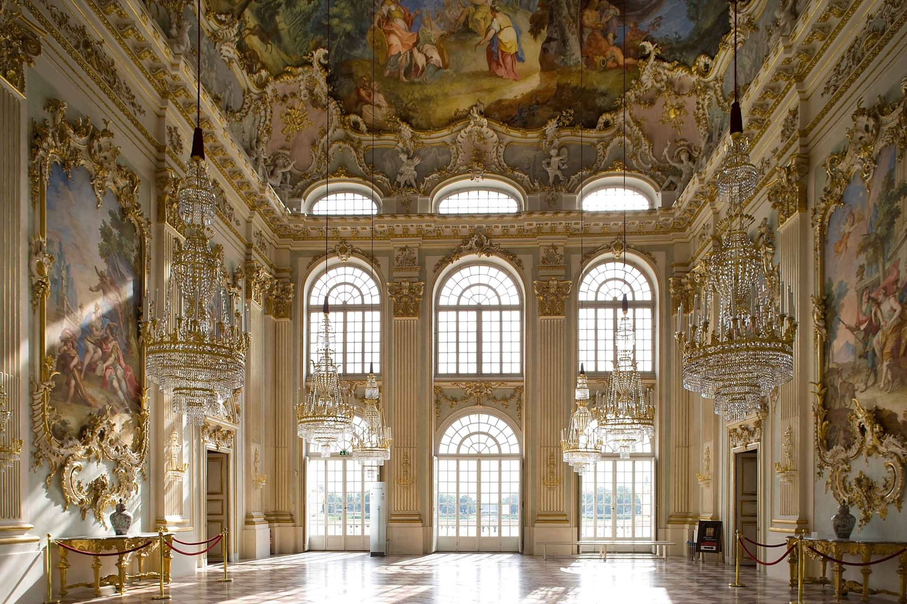

Palazzo di Nymphenburg: La Residenza Imperiale
Il Palazzo di Nymphenburg (Schloss Nymphenburg) è una delle residenze più spettacolari di Monaco di Baviera e uno dei migliori esempi di architettura barocca in Germania. Costruito alla fine del XVII secolo come residenza estiva per i principi elettori di Baviera, il palazzo si trova immerso in un vasto parco e giardini, che offrono uno scenario unico per i visitatori.
Architettura e Storia del Palazzo
Il Palazzo di Nymphenburg fu progettato dall'architetto Agostino Barelli per volere del principe elettore Ferdinando Maria. La costruzione iniziò nel 1664, ma il palazzo fu ampliato e modificato nei secoli successivi, passando dalla sobrietà iniziale a uno stile più elaborato. La facciata principale del palazzo è una delle caratteristiche più iconiche della struttura, con un imponente ingresso e una grande corte d’onore.

I Giardini di Nymphenburg
Il parco che circonda il Palazzo di Nymphenburg è altrettanto affascinante. I giardini, che si estendono su una superficie di circa 200 ettari, sono un esempio straordinario di giardino alla francese, con ampi viali, fontane, e laghetti. Tra le attrazioni più note del parco ci sono il Casino di Nymphenburg, la Chiesa di St. Mary e il famoso Bagno di Diana, un padiglione rococò situato sul lago del parco.
I Musei e le Stanze del Palazzo
All'interno del Palazzo di Nymphenburg si trovano numerose stanze e musei, ognuno dei quali racconta una parte della storia bavarese. Tra i più noti c'è il Museo delle carrozze, che ospita una collezione di carrozze storiche appartenute alla famiglia reale, e il Gabinetto Cinese, che presenta uno splendido esempio di arredamento rococò con influenze cinesi. Altri luoghi da visitare includono la Galleria dei Ritratti, che espone una serie di dipinti della famiglia reale di Baviera, e le stanze regali, riccamente decorate con affreschi e tappezzeria.
Visita al Palazzo di Nymphenburg
Oggi il Palazzo di Nymphenburg è una delle principali attrazioni turistiche di Monaco di Baviera. I visitatori possono passeggiare nei giardini, esplorare le stanze del palazzo e ammirare le collezioni museali. Durante l'estate, il parco diventa una meta ideale per una passeggiata all'aria aperta, mentre in inverno la magia del palazzo è accentuata dalla sua posizione tranquilla e dal paesaggio innevato.